6.6. Local Search Operators
We will use a dummy example throughout this section so we can solely focus on the basic ingredients provided by the or-tools library to do the Local Search.
Our fictive example consists in minimizing the sum of  IntVars
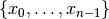 each with domain
IntVars
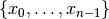 each with domain ![[0, n - 1]](../../_images/math/a84dc802efb57b155d24b907ce9e7bae8caa359a.png) .
We add the fictive constraint
.
We add the fictive constraint  (and thus ask for 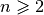):
(and thus ask for 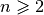):
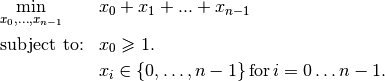
Of course, we already know the optimal solution. Can we find it by Local Search?
6.6.1. LocalSearchOperators
The base class for all Local Search operators is LocalSearchOperator. The behaviour of this class is similar to that of an iterator. The operator is synchronized with a feasible solution (an Assignment that gives the current values of the variables). This is done in the Start() method. Then one can iterate over the candidate solutions (the neighbors) using the MakeNextNeighbor() method. Only the modified part of the solution (an Assignment called delta) is broadcast. You can also define a second Assignment representing the changes to the last candidate solution defined by the Local Search operator (an Assignment called deltadelta).
The CP solver takes care of these deltas and other hassles for the most common cases[1].
The next figure shows the LS Operators hierarchy.
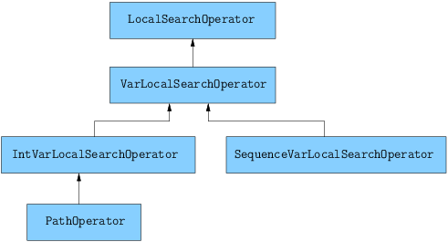These classes are declared in the header constraint_solver/constraint_solveri.h.
The PathOperator class is itself the base class of several other path specialized LS Operators. We will review them in the subsection Local Search PathOperators.[2]
IntVarLocalSearchOperator is a specialization[3] of LocalSearchOperator built for an array of IntVars while SequenceVarLocalSearchOperator is a specialization of LocalSearchOperator built for an array of SequenceVars[4].
6.6.2. Defining a custom LS operator
We will construct an LS Operator for an array of IntVars but the API for an array of SequenceVars is similar[5].
There are two methods to overwrite:
- OnStart(): this private method is called each time the operator is synced with a new feasible solution;
- MakeOneNeighbor(): this protected method creates a new feasible solution. As long as there are new solutions constructed it returns true, false otherwise.
Some helper methods are provided:
- int64 Value(int64 index): returns the value in the current Assignment of the variable of given index;
- int64 OldValue(int64 index): returns the value in the last Assignment (the initial solution or the last accepted solution) of the variable of given index;
- SetValue(int64 i, int64 value): sets the value of the i th variable to value in the current Assignment and allows to construct a new feasible solution;
- Size(): returns the size of the array of IntVars;
- IntVar* Var(int64 index): returns the variable of given index.
To construct a new feasible solution, just redefine MakeOneNeighbor(). What are the issues you need to pay attention to? First, you have to be sure to visit the neighborhood, i.e. to iterate among the (feasible) candidate solutions of this neighborhood. If you return the same solution(s) again and again or if you don’t provide any solution, the solver will not detect it (in the second case, the solver will enter an infinite loop). You are responsible to scour correctly the neighborhood. Second, you have to be sure the variables you want to change do exist (i.e. beware of going out of bounds on arrays).
Now the good news is that you don’t have to test for feasibility: it’s the job of the solver. You are even allowed to assign out of domain values to the variables. Again, the solver will discard such solutions (you can also filter these solutions out, see the section Filtering).
Without further delay, here is the code for our custom LSO:
class DecreaseOneVar: public IntVarLocalSearchOperator {
public:
DecreaseOneVar(const std::vector<IntVar*>& variables)
: IntVarLocalSearchOperator(variables.data(), variables.size()),
variable_index_(0) {}
virtual ~MoveOneVar() {}
protected:
// Make a neighbor assigning one variable to its target value.
virtual bool MakeOneNeighbor() {
if (variable_index_ == Size()) {
return false;
}
const int64 current_value = Value(variable_index_);
SetValue(variable_index_, current_value - 1);
variable_index_ = variable_index_ + 1;
return true;
}
private:
virtual void OnStart() {
variable_index_ = 0;
}
int64 variable_index_;
};
Our custom LS Operator simply takes one variable at a time and decrease its value by  .
The neighborhood visited from a given solution 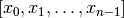
is made of the following solutions (when feasible):
.
The neighborhood visited from a given solution 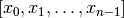
is made of the following solutions (when feasible):
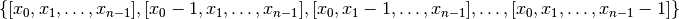
The given initial solution is also part of the neighborhood.
We have rewritten the protected method MakeOneNeighbor() to construct the next solutions. The variable variable_index_ indicates the current variable we are decreasing in the current solution. As long as there are remaining variables to decrease, MakeNextNeighbor() returns true. Once we have decreased the last variable (variable_index_ is then equal to Size()), it returns false.
The private method OnStart() that is used whenever we start again with a new feasible solution, simply resets
the variable index to  to be able to decrease the first variable
to be able to decrease the first variable  by .
by .
We use the LS Operator DecreaseOneVar in the function SimpleLS() that starts as follow:
void SimpleLS(const int64 n, const bool init_phase) {
CHECK_GE(n, 2) << "size of problem (n) must be >= 2";
LOG(INFO) << "Simple LS " << (init_phase ? "with initial phase" :
"with initial solution") << std::endl;
Solver s("Simple LS");
vector<IntVar*> vars;
s.MakeIntVarArray(n, 0, n-1, &vars);
IntVar* const sum_var = s.MakeSum(vars)->Var();
OptimizeVar* const obj = s.MakeMinimize(sum_var, 1);
// unique constraint x_0 >= 1
s.AddConstraint(s.MakeGreaterOrEqual(vars[0], 1));
...
must be greater or equal to 2 as we ask for .
The OptimizeVar SearchMonitor is very important as it will give the direction to follow for the Local Search algorithm. Without it, the Local Search would walk randomly without knowing where to go.
Next, based on the Boolean variable FLAG_initial_phase, we create a DecisionBuilder to find an initial solution or we construct an initial Assignment:
// initial phase builder
DecisionBuilder * db = NULL;
// initial solution
Assignment * const initial_solution = s.MakeAssignment();
if (init_phase) {
db = s.MakePhase(vars,
Solver::CHOOSE_FIRST_UNBOUND,
Solver::ASSIGN_MAX_VALUE);
} else {
initial_solution->Add(vars);
for (int i = 0; i < n; ++i) {
if (i % 2 == 0) {
initial_solution->SetValue(vars[i], n - 1);
} else {
initial_solution->SetValue(vars[i], n - 2);
}
}
}
As we assign the biggest value (ASSIGN_MAX_VALUE) to the first unbound variables (CHOOSE_FIRST_UNBOUND), the initial solution constructed by the DecisionBuilder will be
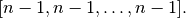
To have some variation, we construct the following initial solution by hand:
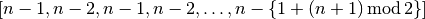
where the value for 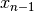 is 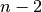 if is even and
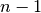 otherwise[6].
The search phase using the LS Operator is given by a... DecisionBuilder which shouldn’t surprise you by now:
// IntVarLocalSearchOperator
DecreaseOneVar one_var_ls(vars);
LocalSearchPhaseParameters* ls_params = NULL;
DecisionBuilder* ls = NULL;
if (init_phase) {
ls_params = s.MakeLocalSearchPhaseParameters(&one_var_ls, db);
ls = s.MakeLocalSearchPhase(vars, db, ls_params);
} else {
ls_params = s.MakeLocalSearchPhaseParameters(&one_var_ls, NULL);
ls = s.MakeLocalSearchPhase(initial_solution, ls_params);
}
Notice how the LS Operator is passed to the DecisionBuilder by means of the LocalSearchPhaseParameters.
We collect the best and last solution:
SolutionCollector* const collector = s.MakeLastSolutionCollector();
collector->Add(vars);
collector->AddObjective(sum_var);
and log the search whenever a new feasible solution is found:
SearchMonitor* const log = s.MakeSearchLog(1000, obj);
This log will print the objective value and some other interesting statistics every time a better feasible solution is found or whenever we reach a 1000 more branches in the search tree.
Finally, we launch the search and print the objective value of the last feasible solution found:
s.Solve(ls, collector, obj, log);
LOG(INFO) << "Objective value = " << collector->objective_value(0);
If we limit ourselves to 4 variables and construct an initial solution by hand:
./dummy_ls -n=4 -initial_phase=false
we obtain the following partial output:
Simple LS with initial solution
Start search, memory used = 15.09 MB
Root node processed (time = 0 ms, constraints = 2, memory used =
15.09 MB)
Solution #0 (objective value = 10, ...)
Solution #1 (objective value = 9, ...)
Solution #2 (objective value = 8, ...)
Solution #3 (objective value = 7, ...)
Solution #4 (objective value = 6, ...)
Solution #5 (objective value = 5, ...)
Solution #6 (objective value = 4, ...)
Solution #7 (objective value = 3, ...)
Solution #8 (objective value = 2, ...)
Solution #9 (objective value = 1, ...)
Finished search tree, ..., neighbors = 23, filtered neighbors = 23,
accepted neigbors = 9, ...)
End search (time = 1 ms, branches = 67, failures = 64, memory used =
15.13 MB, speed = 67000 branches/s)
Objective value = 1
As you can see, 10 solutions were generated with decreased objective values. Solution #0 is the initial solution given: 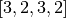. Then as expected, 9 neighborhoods were visited and each time a better solution was chosen:
- neighborhood 1 around
![[3,2,3,2]](../../_images/math/175328140da77805addf7d969f61c9e0df20f3dc.png) :
: - 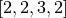 is immediately taken as it is a better solution with value 9;
- neighborhood 2 around :
- 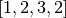 is a new better solution with value 8;
- neighborhood 3 around :
- 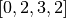 is rejected as infeasible, 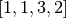 is a new better solution with value 7;
- neighborhood 4 around :
- 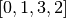 is rejected as infeasible, 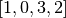 is a new better solution with value 6;
- neighborhood 5 around :
- 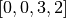, 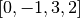 are rejected as infeasible, 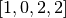 is a new better solution with value 5;
- neighborhood 6 around :
- 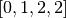, 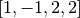 are rejected as infeasible, 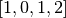 is a new better solution with value 4;
- neighborhood 7 around :
- 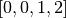, 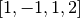 are rejected as infeasible, 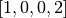 is a new better solution with value 3;
- neighborhood 8 around :
- 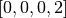, 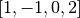, 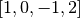 are rejected as infeasible, 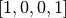 is a new better solution with value 2;
- neighborhood 9 around :
- 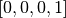, 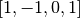, 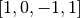 are rejected as infeasible, 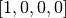 is a new better solution with value 1;
At this point, the solver is able to recognize that there are no more possibilities. The two last lines printed by the SearchLog summarize the Local Search:
Finished search tree, ..., neighbors = 23, filtered neighbors = 23,
accepted neighbors = 9, ...)
End search (time = 1 ms, branches = 67, failures = 64, memory used =
15.13 MB, speed = 67000 branches/s)
There were indeed 23 constructed candidate solutions among which 23 (filtered neighbors) were accepted after filtering and 9 (accepted neighbors) were improving solutions.
If you take the last visited neighborhood (neighborhood 9), you might wonder if it was really necessary to construct “solutions” , and and let the solver decide if they were interesting or not. The answer is no. We could have filtered those solutions out and told the solver to disregard them. We didn’t filter out any solution (and this is the reason why the number of constructed neighbors is equal to the number of filtered neighbors). You can learn more about filtering in the section Filtering.
If you want, you can try to start with the solution provided by the DecisionBuilder (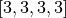 when 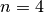) and see if you can figure out what the 29 constructed candidate solutions (neighbors) and 11 accepted solutions are.
6.6.3. Combining LS operators
Often, you want to combine several LocalSearchOperators. This can be done with the ConcatenateOperators() method:
LocalSearchOperator* ConcatenateOperators(
const std::vector<LocalSearchOperator*>& ops);
This creates a LocalSearchOperator which concatenates a vector of operators. Each operator from the vector is called sequentially. By default, when a candidate solution is accepted, the neighborhood exploration restarts from the last active operator (the one which produced this candidate solution).
This can be overriden by setting restart to true to force the exploration to start from the first operator in the vector:
LocalSearchOperator* Solver::ConcatenateOperators(
const std::vector<LocalSearchOperator*>& ops, bool restart);
You can also use an evaluation callback to set the order in which the operators are explored (the callback is called in LocalSearchOperator::Start()). The first argument of the callback is the index of the operator which produced the last move, the second argument is the index of the operator to be evaluated. Ownership of the callback is taken by the solver.
Here is an example:
const int kPriorities = {10, 100, 10, 0};
int64 Evaluate(int active_operator, int current_operator) {
return kPriorities[current_operator];
}
LocalSearchOperator* concat =
solver.ConcatenateOperators(operators,
NewPermanentCallback(&Evaluate));
The elements of the operators’ vector will be sorted by increasing priority and explored in that order (tie-breaks are handled by keeping the relative operator order in the vector). This would result in the following order:
operators[3], operators[0], operators[2], operators[1].
Sometimes you don’t know in what order to proceed. Then the following method might help you:
LocalSearchOperator* Solver::RandomConcatenateOperators(
const std::vector<LocalSearchOperator*>& ops);
This LocalSearchOperator calls a random operator at each call to MakeNextNeighbor(). You can provide the seed that is used to initialize the random number generator:
LocalSearchOperator* Solver::RandomConcatenateOperators(
const std::vector<LocalSearchOperator*>& ops, int32 seed);
6.6.4. Interesting LS operators
Several existing LocalSearchOperators can be of great help. Combine these operators with your own customized operators.
PathOperators will be reviewed in the subsection Local Search PathOperators.
6.6.4.1. NeighborhoodLimit
This LocalSearchOperator creates a LocalSearchOperator that wraps another LocalSearchOperator and limits the number of candidate solutions explored (i.e. calls to MakeNextNeighbor() from the current solution (between two calls to Start()). When this limit is reached, MakeNextNeighbor() returns false. The counter is cleared when Start() is called.
Here is the factory method:
LocalSearchOperator* Solver::MakeNeighborhoodLimit(
LocalSearchOperator* const op,
int64 limit);
6.6.4.2. MoveTowardTargetLS
Creates a Local Search operator that tries to move the assignment of some variables toward a target. The target is given as an Assignment. This operator generates candidate solutions which only have one variable that belongs to the target Assignment set to its target value.
There are two factory methods to create a MoveTowardTargetLS operator:
LocalSearchOperator* Solver::MakeMoveTowardTargetOperator(
const Assignment& target);
and
LocalSearchOperator* Solver::MakeMoveTowardTargetOperator(
const std::vector<IntVar*>& variables,
const std::vector<int64>& target_values);
The target is here given by two std::vectors: a vector of variables and a vector of associated target values. The two vectors should be of the same length and the variables and values are ordered in the same way.
The variables are changed one after the other in the order given by the Assignment or the vector of variables. When we restart from a new feasible solution, we don’t start all over again from the first variable but keep changing variables from the last change.
6.6.4.3. DecrementValue and IncrementValue
These operators do exactly what their names say: they decrement and increment by 1 the value of each variable one after the other.
To create them, use the generic factory method
LocalSearchOperator* Solver::MakeOperator(
const std::vector<IntVar*>& vars,
Solver::LocalSearchOperators op);
where op is an LocalSearchOperators enum. The values for DecrementValue and IncrementValue are respectively Solver::DECREMENT and Solver::INCREMENT.
The variables are changed in the order given by the std::vector. Whenever we start to explore a new neighborhood, the variables are changed from the beginning of the vector anew.
6.6.4.4. Large Neighborhood Search (LNS)
And last but not least, in or-tools, Large Neighborhood Search is implemented with LocalSearchOperators but this is the topic of the section Large neighborhood search (LNS): the job-shop problem.
Footnotes
| [1] | deltas and deltadeltas are explained in more details in the section Filtering. |
| [2] | The PathOperator classes have some particularities. For instance, they use a special customized MakeNeighbor() method instead of the MakeOneNeighbor() method. |
| [3] | The VarLocalSearchOperator class is the real base operator class for operators manipulating variables but its existence for our understanding of the LocalSearchOperators is irrelevant here. |
| [4] | At the time of writing, December 18 th, 2014, there are no LocalSearchOperators defined for IntervalVars. |
| [5] | For instance, the SetValue() method is replaced by the SetForwardSequence() and SetBackwardSequence() methods. |
| [6] | The modulo operator (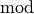) finds the remainder of the division of one (integer)
number by another:
For instance, 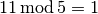 because 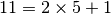. When you want to test a
positive number for parity, you can test 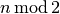.
If 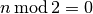
then is even, otherwise it is odd. In C++, the operator is %. |
Google or-tools |
User's Manual
Google search
Welcome
Tutorial examples
Current chapter
6. Local Search: the Job-Shop Problem
Previous section
6.5. Basic working of the solver: Local Search
Next section
6.7. The Job-Shop Problem: and now with Local Search!